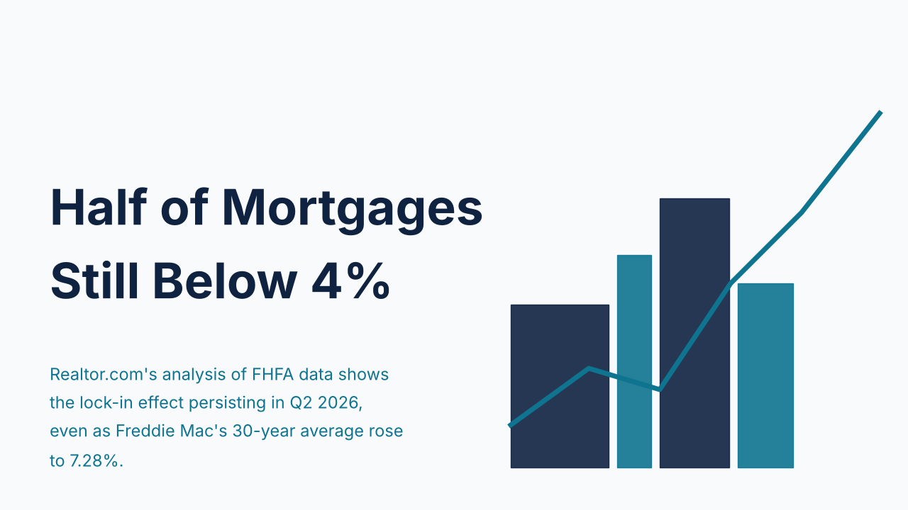
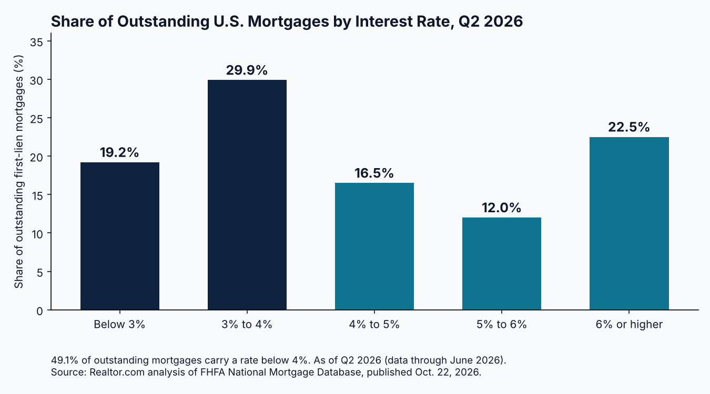

Half of U.S. Mortgages Still Carry Rates Below 4% While 6%-Plus Loans Reach 22.5%

The mortgage rate lock-in effect has not loosened. According to a Realtor.com analysis of the FHFA National Mortgage Database, published October 22, 2026, 49.1% of outstanding first-lien mortgages carried a rate below 4% as of the second quarter of 2026. Another 16.5% sat between 4% and 5%, and 12.0% between 5% and 6%. Only 22.5% of loans carried a rate of 6% or higher, and that group has grown 2.3 percentage points over the past year.
The composition of the loan book explains why. Loans originated from mid-2019 to mid-2022 now account for a record 42.8% of outstanding mortgages, up from 40.8% in the prior reading, while loans originated since mid-2022 make up just 27.8%. Realtor.com projects that, if rates stay above 6%, the 6%-plus share could reach roughly 27% to 28.5% of outstanding loans by mid-2027. Even then, about 72% to 73% of owners would hold a rate below 6%, which keeps a large pool of potential sellers reluctant to trade into a higher payment.
Current rates reinforce that reluctance. Freddie Mac's Primary Mortgage Market Survey put the 30-year fixed average at 7.28% on November 19, 2026, up from 7.11% the week before and well above 6.26% a year earlier. The 15-year average was 6.66%. The 30-year rate has ranged between 7.11% and 7.40% in every weekly reading since October 1, with the peak of 7.40% recorded on October 8 and October 15. With the federal funds target range at 3.75% to 4.00% and futures pricing a 93% chance of a quarter-point increase at the December 8 and 9 meeting, as of November 20, the market is not signaling near-term relief.

For investors and lenders, the practical consequence is that existing owners with sub-4% loans have little financial incentive to sell, while any acquisition financed today is priced near 7%. A deal that penciled at a 4% or 5% financing assumption two years ago can fail a debt service coverage test at current rates, even when the property itself has not changed. Underwriting on stale rate assumptions is the most common reason a deal that looks viable on a spreadsheet fails at the lender.
The lock-in effect is a slow-moving feature of the market rather than a short-term anomaly. Until a larger share of owners hold rates near today's levels, supply will stay constrained and financing costs will remain the central variable in investor underwriting. Running the numbers at current rates, and again at a stress case, remains the sensible discipline for any deal under review this week.